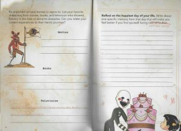

If you see any issues, please do make us aware via our Contact Form.
Thank you for browsing FNaFLore.com, we hope you enjoy the improvements that are coming to the site!

The truth of UCN
Who are we playing as in UCN? Who is our mysterious tormentor? Why has a seventh victim been added to the FNaF canon? All these mysteries and more will be answered with THE TRUTH OF UCN.
The divide of the community
The two main theories of what exactly is going on are appropriately named WillHell and MikePurg, which both have flaws in them you can’t ignore.
WillHell
WillHell, which is the most popular of the two, states that William is trapped in hell or a hell-like place and is constantly being killed for killing all the children, however, one of his victims has a bone to pick with him. The One You Should Not Have Killed, or TOYSNHK as the community has called it.
The theory also states that Cassidy is the one behind UCN, implied by the Golden Freddy cutscene, twitching at the end. However, there is that image of very clearly a boy that fades in and out all the time. “He’s here, and always watching, the one you should not have killed”.
Cassidy was introduced in The Fourth Closet as a young girl while the logbook reinforces that, by including an image of a girl in the position of Golden Freddy that matches Cassidy’s description in the page about Happiest Day.

So, Cassidy can’t be the punisher.
There is also this mysterious 7th victim that could be punishing William, but why does this child have the power to create UCN? What makes him so different and why has he never appeared before?
MikePurg
Now, on to MikePurg. This theory assumes that Mike is Foxy Bro and BV is punishing him for killing even though he said sorry. What makes this theory hard for me to believe is that it’s not in BV’s character to be a sociopath and torture his brother.
What makes this difficult however, is the contradictions with each voice line that work for each theory.
For example; Puppet “I recognise you! But I’m not afraid of you. Not anymore.” which supports WillHell however, she also says “I don’t hate you, but you need to stay out of my way.” which supports MikePurg.
Another example is Nightmare Fredbear saying “We know who our friends are, and you are not one of them.” which supports MikePurg while Nightmarionne says “I am the fearful reflect-ection of what you have cre-eated.” which supports WillHell.
There are voice lines that seemly work for WillHell and MikePurg which has lead to the 2 player theory however, OMC does say that only one person is down there. “Leave the demon to his demons”. So, what is going on?
Well, UCN is not a sequel to the main game series, it is a sequel to FNaF World.
Evidence for FNaF World 2
For this, I have to give evidence where it is due. u/Doo-wop-a-saurus posted a video about UCN stating it was a continuation of FNaF World which has heavily affected my theory.
Here is the link for those curious: https://www.youtube.com/watch?v=XrmDPvMW9gY
The points he raised were
- Toy Chica says “You won’t get tired of my voice, will you?”, a reference to a line she says in the FNaF World minigame Chica’s Magic Rainbow.
- The promience of DeeDee, a character from FNaF World
- The OMC Ending
- The various FNaF World characters that appear on the desk
- The menus being very similar
- Withered Chica was the first as she was the first of the UCN animatronics to be created in FNaF World
- And more recently after the video, he noticed that the twitching Golden Freddy in the final cutscene of UCN is the twitching FredPlush in FNaF World.
Since then, I have noticed more evidence of this being a FNaF World sequel.
- The “NEW CONTENDER!” from FNaF World is reused in UCN
- You get power-ups in UCN just like you did in FNaF World
- The voices aren’t coming from the souls, they are coming from the characters. Kellen Goff revealed that the voice lines for Fredbear were originally intended for Freddy Fazbear. I don’t think the soul of Freddy also possesses Fredbear, so the voices are coming from the characters themselves, not the souls in them.
- Non-canon characters being used.
- And finally, a line Mangle says that wraps this all up, “He’s here, and always watching. The one you shouldn’t have killed.”
The final line may confuse you as nothing immediately links this to FNaF World, however, the line is reused from the Clock Ending in FNaF World. “He’s here and always watching. The puppetmaster.”
What is actually going on in UCN?
With the Clock Ending, it was revealed that the puppetmaster was lying to us and the true purpose was to leave breadcrumbs for BV. This puppetmaster was revealed to be Scott. But Scott can’t be TOYSNHK, right? But he is.
In FNaF World, us the fans, kill him by forcing him to make Baby. He is the one we should not have killed. This starts UCN.
This whole game has been just a game. No lore. No additions to the timeline. Just a custom night, and that’s all Scott said it was. A non-canon custom night. The “lore” with the 7th victim and someone controlling UCN was just a pile of lies, a troll if you will. The clues conflict because they are meant to. The debate that has followed suit of WillHell vs MikePurg has been a waste of time. And there is evidence that this is the case. Mr Hippo.
I won’t copy and paste the whole 4 stories of Mr Hippo (however, there are audio transcripts on this website) so I’ll state what the main message of each of his stories were.
- Not every story has significance.
- Not every story is about something. It’s just a story.
- Take things at face value.
Now, this last one is quite interesting. It’s Mr Hippo rambling on for a while before questioning how he got here. He then says “maybe it means nothing at all”. Because UCN means nothing at all. Not every story has significance, including this one. Not every story is about something, such as the Toy Chica cutscenes. It means nothing in terms of FNaF lore. And take things at face value. Scott introduced this game as a non-canon game, so it is. Even after the game was released, in the interview, he said he was happy with the lore of FFPS and UCN was a game to send the franchise off.
Because that is all this game is. A good game to play but a troll for theorists.
The complication
However, there is Baby controlling the Mediocre Melodies. Does that mean she is actually in control?
No.
Still to this day fnafworld.com still has Baby saying “I am still here” because she is still in FNaF World. She is just as trapped as we are for killing Scott. This is reinforced by Orville in his possessed state saying “Now matter how many times, they burn us”. She was burnt in the FFPS ending. And Orville says “He tried to release you. He tried to release us.” We see in the OMC ending, someoneis told bby OMC to leave the demon to his demons, however, the player goes in anyway then it crashes. This changes nothing as no matter how many times he will try to save them, Baby wants to stay here, where she has control.
And about Golden Freddy being the final cutscene. This is FredPlush, his warnings of Scott’s manipulation are fading as we start to believe and debate this false reality, something that “means nothing at all”.
And that’s me ruining UCN, and my last article before new content.
Freelance theorist